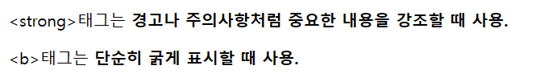
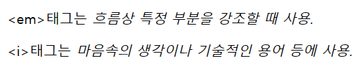
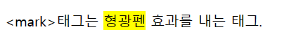
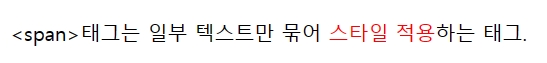
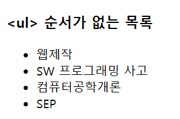
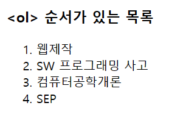

Textual information has the advantage of being convenient to modify, but has a large amount of text
In some cases, it's hard to find information. So I changed the size, color, and style as needed
Show it. In addition, there are tags associated with a list that can be used in many ways.
<strong>태그와 <b>태그는 글자를 굵게 표시
-<strong>태그는 경고나 주의사항처럼 중요한 내용을 강조할 때 사용
-<b>태그는 단순히 굵게 표시할 때 사용
- 시각적으로는 차이가 없음

<em> / <i>
<em>태그와 <i>태그는 이탤릭체(기울림꼴)로 표시
-<em>태그는 흐름상 특정 부분을 강조할 때 사용
-<i>태그는 마음속의 생각이나 기술적인 용어 등에 사용
- 시각적으로는 차이가 없음

<q>
<q>태그는 인용내용 표시 태그
- 쌍따옴표로 표시 됨
<mark>
<mark>태그는 지정한 구역을 형광펜 효과를 내는 태그

<span>
<span>태그는 일부 텍스트만 묶어 스타일하는 태그

<ul> / <ol> / <li>
<ul>태그와 <ol>태그와 <li>태그는 목록을 만드는 태그
- <ul>태그는 순서가 없는 목록을 만드는 태그
- 이중<ul>태그를 쓰면 빈 원으로 목록이 생김
- <ol>태그 순서가 있는 목록을 만드는 태그
- <ol>태그와 <ul> 안에 type을 넣어서 리스트 타입을 바꿀 수 있음
- <li>태그는 리스트 목록을 만드는 태그

